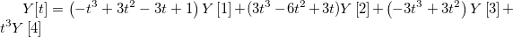

2D-Linie
2D-Punkt-Linie
2D-Balken/-Säulen mit Verbindungslinie
Polardiagramm
Radardiagramm
Netzwerkdiagramm
_Line_Tab/400px-The_Plot_Details_Line_Tab_4b.png)
Banddiagramm
3D-Punkt/-Ankerpunkt/-Vektor
Hierarchisches Edge Bundling
Die Anpassung der Linien ist für eine große Anzahl von Diagrammtypen möglich. Folglich variiert die tatsächliche Abfolge der auf der Registerkarte Linie verfügbaren Bedienelemente und ist abhängig vom Diagrammtyp. Der folgende Referenzabschnitt gibt eine Übersicht über alle möglichen Bedienelemente dieser Registerkarte. Einige Bedienelemente werden bei einigen Diagrammtypen nicht verfügbar sein.
2D-Linie
|
2D-Punkt-Linie
|
2D-Balken/-Säulen mit Verbindungslinie
|
Polardiagramm
|
Radardiagramm
|
Netzwerkdiagramm
|
|
|
Banddiagramm
|
3D-Punkt/-Ankerpunkt/-Vektor
|
Hierarchisches Edge Bundling
|
Wählen Sie die gewünschte Verbindungslinie aus dieser Auswahlliste aus.
| Keine Linie |
Die Datenpunkte werden nicht miteinander verbunden. |
|---|---|
| Gerade |
Eine Gerade wird zwischen den Datenpunkten angezeigt. |
| 2-Punkt-Segment |
Die Verbindungsanzeige wechselt zwischen Gerade und Keine Linie. |
| 3-Punkt-Segment |
Die Verbindungsanzeige wechselt zwischen Gerade über drei Punkte, Keine Linie, Gerade über drei Punkte usw. |
| B-Spline |
Für ein Datensatzpaar mit Koordinaten
wobei |
| Spline |
Diese Option erzeugt eine kubische Spline-Verbindung. Um diesen Verbindungstyp einzusetzen, müssen die X-Werte diskret und steigend sein. Außerdem darf die Anzahl der Datenpunkte 900 nicht übersteigen (wenn der Datensatz über diese Anzahl hinausgeht, wird diese Operation fehlschlagen). Da Kurveninformationen gespeichert werden, bleibt die Spline-Auflösung dieselbe, unabhängig von Vergrößerungen der Seite. Die Variable SplineStep in der ORIGIN.INI-Datei bestimmt das Spline-Berechnungsintervall. Es wird in Punkteinheiten von 0,1 ausgedrückt. |
| Stufe Horizontal |
Diese Option erzeugt eine rechtwinklige Verbindung. Die Anfangslinie ist horizontal. |
| Stufe Vertikal |
Diese Option erzeugt eine rechtwinklige Verbindung. Die Anfangslinie ist vertikal. |
| Stufe H Zentriert |
Diese Option erzeugt eine rechtwinklige Verbindung. Jeder Punkt befindet sich in der Mitte der horizontalen Verbindung. |
| Stufe V Zentriert |
Diese Option erzeugt eine rechtwinklige Verbindung. Der Punkt befindet sich in der Mitte der vertikalen Verbindung. |
| Bezier |
Diese Option erzeugt eine Bezier-Kurve. Die Bezierkurve ist der B-Spline-Kurve sehr ähnlich. Sie lässt sich durch parametrische Gleichungen über vier Originaldatenpunkte beschreiben:
 Origin verwendet vier aufeinander folgende Datenpunkte, zum Beispiel , um einen Abschnitt der Bezier-Kurve zu erzeugen, wobei der t-Bereich 0 bis 1 umfasst. Die Kurve verläuft immer durch den ersten und den vierten Punkt, aber nicht durch den zweiten und dritten. Der nächste Abschnitt der Kurve wird durch |
| Modifizierter Bezier |
Diese Verbindungsmethode erzeugt eine Bezier-Kurve unter Verwendung des gleichen Algorithmus als Bezier-Methode, aber anstatt vier aufeinanderfolgende Datenpunkte werden hier zwei Punkte der Daten udn zwei interpolierte Punkte als Kontrollpunkte verwendet. |
| Akima-Spline |
Diese Verbindungsmethode erzeugt eine Akima-Spline mit dem Algorithmus der Akima-Spline-Interpolation. Die Akima-Interpolation wird nicht von Ausreißern zum Schwanken gebracht. |
|
Hinweise:
|
Legen Sie fest, ob die Symbole mit Hilfe einer geraden Linie für 3D-Punkt-/Ankerlinien-/Vektordiagramme verbunden werden sollen.
Wählen Sie die gewünschte Verbindungslinie aus dieser Auswahlliste aus.
Durch Klicken auf die Schaltfläche zum Navigieren  rechts von der Liste Stil wird bei den Diagrammtypen, die diese Funktion unterstützen, der Dialog Benutzerdefinierte Strichlinie geöffnet. Hier können die Anwender Strichlinien definieren oder vorhandene Definitionen modifizieren und sie unter einem neuen Namen speichern.
rechts von der Liste Stil wird bei den Diagrammtypen, die diese Funktion unterstützen, der Dialog Benutzerdefinierte Strichlinie geöffnet. Hier können die Anwender Strichlinien definieren oder vorhandene Definitionen modifizieren und sie unter einem neuen Namen speichern.
Definitionen werden mit dem Projekt gespeichert, um Dateien einfacher teilen zu können (falls Mitarbeitende die gleiche Definition einer Strichlinie in anderen Projekten verwenden möchten, müssen Sie die benutzerdefinierte Definition auf ihren Systemen speichern).
|
Hinweis: Bei geringer Bildschirmauflösung oder in kleinen Fenstern können gestrichelte Linien durchgezogen erscheinen. Im Ausdruck dürfte die Linie jedoch korrekt gezeichnet werden. |
Wählen Sie den gewünschten Verbundstil der Linie aus dieser Auswahlliste aus.
Wählen Sie oder geben Sie die gewünschte Linienbreite in dieses Auswahlfeld ein. Die Linienbreite wird in Punkten gemessen, wobei 1 Punkt=1/72 Zoll entsprechen.
Für alle 2D-Diagramme mit dieser Registerkarte Linie können Sie in der Auswahlliste Linienbreite eine Spalte auswählen, um die Linienbreite auf diese Spalte abzubilden. Bitte beachten Sie, dass nur Spalten in dem aktuellen Arbeitsblatt in der Auswahlliste aufgeführt werden.
Wenn eine Spalte ausgewählt ist, können Sie einen Skalierungsfaktor festlegen, um die Breitenspalte mit einem Wert zu multiplizieren und die Linienbreite zu definieren. Sie können sich auf den Skalierungsfaktor für die Symbolgröße beziehen.
Wählen Sie aus dieser Auswahlliste die gewünschte Linienfarbe aus.
In einem Punkt-Liniendiagramm wird die Symbolfarbe standardmäßig auf Automatisch gesetzt, d.h., sie entspricht der Linienfarbe. Die Symbolfarbe kann auf der Registerkarte Symbol festgelegt werden.
In einem Banddiagramm ist die Bandfarbe standardmäßig auf Auto gesetzt, das bedeutet, dass alle Bänder der Farbe der verbundenen Spalten folgen.
Wenn die Farbe auf Inkrement oder Index gesetzt ist, werden die Farben für jedes Liniensegment mit Hilfe des Inkrementeditors gesteuert. |
Legen Sie die Farbe der Verbindungslinien fest. Dieses Bedienelement ist das gleiche wie bei der Verbindungsfarbe des Sehnendiagramms.
Bei einigen Polardiagrammen wie dem Gestapelten Radialdiagramm müssen wir womöglich den Anfangs- und Endpunkt verbinden, um einen Kreis zu erstellen. Aktivieren Sie dieses Kontrollkästchen, um den ersten und den letzten Punkt für das Liniendiagramm zu verbinden.
Dieser Abschnitt ist nur verfügbar, wenn der Diagrammtyp Punkt-Liniendiagramm (Linie + Symbol) ist.
Aktivieren Sie das Kontrollkästchen Lücke bei Symbolen, um in Diagrammen mit Symbolen und Linien eine Lücke zwischen jedem Symbol und der verbindenden Linie anzuzeigen. Zum Ändern des Abstands verwenden Sie das Feld Abstand Symbol/Linie auf der Registerkarte Grafik des Dialogs Optionen (Einstellungen: Optionen).
Wenn das Kontrollkästchen Lücke bei Symbolen deaktiviert ist, sind die Optionen Linie im Vordergrund und Linie im Hintergrund verfügbar, mit denen Sie die Anzeige der Linie durch das Symbol festlegen können.
Um eine Linie anzuzeigen, die durch das Symbol geht, wählen Sie die Option Linie im Vordergrund. Alternativ wählen Sie die Option Linie im Hintergrund, um die Linie zu verbergen.
|
Hinweis: Die Optionen Linie im Vordergrund und Linie im Hintergrund haben den gleichen visuellen Effekt auf ein Diagramm, bei dem das Symbolinnere auf hohl eingestellt ist: die Linie wird immer angezeigt, auch wenn sie durch das Symbol führt. Zum Verbergen der Linie wählen Sie Offen in der Auswahlliste Innen (Benutzerdefinierte Konstruktion muss aktiviert sein) auf der Registerkarte (Details Zeichnung) Symbole. Legen Sie für Füllfarbe die gleiche Farbe wie die Hintergrundfarbe des Layers fest. |
Dieses Kontrollkästchen ist für 2D-Balken-/-Säulendiagramme mit Verbindungslinie und 2D-Linien-/-Punkt-Liniendiagramme verfügbar.
Wenn Sie auf der Registerkarte Anzeige das Kontrollkästchen Verbindungslinie für das 2D-Säulen-/-Balkendiagramm aktiviert haben, wird dieses Kästchen standardmäßig aktiviert, um nur die Mittelpunkte der gleichen Datenspalte innerhalb der Teildatensätze zu verbinden.
Dieses Kontrollkästchen ist per Standard für Linien- oder Punkt-Liniendiagramme aktiviert. Für eine einfache einzelne Zeichnung hat es keinen Mehrwert, aber in Situationen, in denen Sie eine einzelne Zeichnung in klare Segmente (Teildatensätze) mittels Daten in einer kategorialen Spalte aufteilen möchten, lässt das Aktivieren des Kontrollkästchens das Entfernen unerwünschter Verbindungslinien zwischen den Teildatensätzen zu.
_Line_Tab/OH_Connect_Within_Subset_L_L-S.png)
Teilen Sie die Zeichnung in eindeutige Segmente (Teildatensätze) auf mit Hilfe der Bedienelemente auf der Registerkarte Teildatensatz im Dialog Details Zeichnung.
Legen Sie fest, ob Pfeile auf dem Liniendiagramm gezeigt werden. Dieses Bedienelement ist nur für das 2D-Liniendiagramm verfügbar.
Wenn dieses Kontrollkästchen aktiviert ist, wird die Registerkarte Pfeil gezeigt, auf der sie entscheiden können, wie die Pfeile zur Linie hinzugefügt werden.
Diese Option steuert, wie durchsichtig die Balken sind. Bewegen Sie den Schieber oder geben Sie eine gewünschte ganze Zahl von 0 bis 100 in das Kombinationsfeld ein. Beachten Sie, dass das Symbol bei 0 gar nicht und bei 100 vollkommen transparent ist.
Legen Sie die Transparenz von jeder Verbindungslinie zwischen Knoten fest.
Legen Sie den Transparenzwert von Maximum und Minimum für die Linien fest. Alle Linien haben Transparenzwerte unter diesem Bereich.
Legen Sie eine Spalte fest, um die Transparenz für alle Verbindungslinien abzubilden. Die Werte in dieser Spalte sind normalisiert und werden verwendet, um die Transparenz von jeder Linie auf den festgelegten Transparenzbereich abzubilden, falls Absoluten Wert verwenden nicht aktiviert ist.
Aktivieren Sie dieses Kontrollkästchen. Die Werte in der ausgewählten Spalte sind tatsächliche Transparenzwerte.
Legen Sie die Transparenz der Verbindungslinien zwischen Blättern fest.
Legen Sie den Bereich der Transparent aller Linien fest.
Wenn diese Option ausgewählt ist, werden zwei Schieber zur Gruppe Transparenz hinzugefügt: Minimum (90 per Standard) und Maximum (0 per Standard). Wenn sie auf eine Spalte im Blatt plot_network abgebildet werden, werden die Datenwerte für Minimum und Maximum linear von Minimum bis Maximum abgebildet.
Dieses Bedienelement wurde primär für Korrelationsnetzwerkdiagramme implementiert. Da die Korrelationsmatrix negative Koeffizienten erzeugen kann, verwendet dieses Kontrollkästchen absolute Werte (z. B. abs(Weight)), um die Transparenz zu steuern.
Sie können ein Flächen- oder ein Füllflächendiagramm direkt im Menü unter Zeichnen: Einfache 2D: Flächendiagramm oder Zeichnen: Einfache 2D: Füllfläche erstellen, aber es ist auch möglich, ein Linien- oder Punkt-Liniendiagramm benutzerdefiniert anzupassen und die Fläche zu füllen. Wenn das Kontrollkästchen Aktivieren aktiviert ist, wird eine Auswahlliste aktiviert, die die Optionen der untenstehenden Tabelle enthält. Ein Vorschaubild rechts von der Auswahlliste illustriert die zu füllende Fläche.
Zusätzlich wird eine Registerkarte Muster zum Dialog Details Zeichnung hinzugefügt, mit dem die Füllfläche benutzerdefiniert angepasst werden kann, wenn das Kontrollkästchen Fläche unter Kurve füllen aktiviert ist. Wenn Sie sich für Mit Farben ober- und unterhalb füllen entscheiden, werden zwei Registerkarten Muster hinzugefügt und mit den Namen Muster_oberhalb und Muster_unterhalb versehen. Mit ihrer Hilfe können die "obere" und "untere" Füllung getrennt voneinander angepasst werden.
| Bis Basis anpassen |
In einem Linien- oder einem Punkt-Liniendiagramm wird die Fläche gefüllt, die von dem Kurvenzug und der festgelegten Basislinie eingerahmt wird. In einem Polardiagramm füllt Origin die durch den Kurvenzug und die unteren Hauptgitterlinien der X-Achse zwischen 0 und 180 Grad festgelegte Fläche.
| |
|---|---|---|
| Nur Seitenlinien |
Zeichnen Sie zwei vertikale Linien zwischen der Linie der Datenzeichnung und der festgelegten Basislinie für ein Linien- oder ein Punkt-Liniendiagramm.
| |
| Bis Datenzeichnung füllen |
Wenn sich in diesem Diagrammlayer mehr als ein Liniendiagramm (oder Punkt-Liniendiagramm) befinden, füllt diese Option die Fläche zwischen der ausgewählten Datenzeichnung und einer anderen festgelegten Datenzeichnung mit einer oder zwei Farben. Die Abfolge der Datenzeichnungen kann in dem Dialog Layerinhalt bestimmt werden. Datenzeichnung:
Mit Farben ober- und unterhalb füllen:
Optionsliste Füllen in:
Beachten Sie, dass Sie als eine Alternative zu den Bedienelementen der Registerkarte Linie auch zwei beliebige Zeichnungen im Diagrammlayer mit Hilfe der Strg-Taste auswählen können und dann die Füllungen zwischen den ausgewählten Kurven mittels der Minisymbolleistenschaltflächen anwenden. | |
| Formen nach Ausrichtung füllen |
Diese Option soll Shapefile-Daten bearbeiten, bei denen fehlende Wertepaare dazu verwendet werden, Polygone zu trennen. Diese fehlenden Wertepaare hindern die Optionen Bei fehlenden Werten unterbrochen und Bei fehlenden Werten nicht unterbrochen daran, Polygonfüllungen richtig zu bearbeiten. Wenn Sie mit Shapefile-Daten arbeiten, verwenden Sie diese Option, um das Innere von Polygonen einzufärben. Beachten Sie, dass diese Option auch die Registerkarte Abstände hinzufügt, auf der Teildatensatz aktivieren per Standard auf Kein gesetzt ist. Um eine Farbfüllung auf Shapefile-Polygone anzuwenden, wählen Sie die Option Nach Spalte auf der Registerkarte Abstände und dann eine Spalte zum Definieren Ihres Teildatensatzes. Klicken Sie auf der Registerkarte Muster unter Füllung auf Farbe und wählen Sie auf der Registerkarte Nach Punkten eine Farbliste. Unter Farboptionen wählen Sie dann eine Methode zum Anwenden der Farbe. | |
| Formen nach umgekehrter Ausrichtung füllen |
Polygone werden auf die gleiche Weise wie bei der vorherigen Option gezeichnet (... nach Ausrichtung), allerdings mit umgekehrten Füllungen (außerhalb der Polygone). Diese Option fügt auch die Registerkarte Abstände hinzu, wobei Teildatensatz aktivieren per Standard auf Kein gesetzt ist. Siehe den vorherigen Abschnitt zum Verwenden der Bedienelemente auf der Registerkarte Abstände. | |
| Bei fehlenden Werten unterbrochen |
Origin füllt die Fläche zwischen dem Kurvenzug und einer durch den ersten und den letzten Datenpunkt der Zeichnung definierten Basislinie. Wenn das Diagramm fehlende Werte einschließt, füllt Origin das erste Segment der Datenzeichnung (bis zu dem fehlenden Wert) und dann das zweite Segment der Zeichnung bis zu dem nächsten fehlenden Wert etc. Diese Option ist ideal, wenn Sie eine durch die Datenzeichnung festgelegte umschlossene Fläche füllen. | |
| Bei fehlenden Werten nicht unterbrochen |
Origin füllt die Fläche außerhalb der Datenzeichnung und der durch den ersten und den letzten Datenpunkt der Zeichnung definierten Basislinie. Wenn das Diagramm fehlende Werte einschließt, füllt Origin die Fläche außerhalb des ersten Segments des Diagramms (bis zu dem fehlenden Wert) und dann die Fläche außerhalb des zweiten Segments des Diagramms bis zu dem nächsten fehlenden Wert etc. Diese Option ist auch ideal, wenn Sie einen Bereich außerhalb der durch das Diagramm festgelegten eingeschlossenen Fläche füllen möchten. | |
| Layer vertikal unterbrochen durch fehlende Werte |
Diese Option kann in Zusammenhang mit einem sekundären Datensatz verwendet werden, um Rezessionsbalken zu einem 2D-Diagramm hinzuzufügen. Der sekundäre Datensatz verwendet fehlende Werte, um jeden Rezessionszeitraum zu kennzeichnen. Weitere Informationen finden Sie unter FAQ-840 Wie füge ich Rezessionsbalken zu einem 2D-Diagramm hinzu? | |
| Paarweise vertikal aufspannen | Diese Option kann in Zusammenhang mit einem sekundären Datensatz verwendet werden, um Rezessionsbalken zu einem 2D-Diagramm hinzuzufügen. Der sekundäre Datensatz ist so strukturiert, dass die X-Werte für jeden Rezessionszeitraum zwischen Anfangs- und Endpunkten abwechseln. Weitere Informationen finden Sie unter FAQ-840 Wie füge ich Rezessionsbalken zu einem 2D-Diagramm hinzu? |
Hinweis: Tipps zum Arbeiten mit gruppierten Zeichnungen.
|
Wenn Füllfläche unter Kurve Normal, Nur Seitenlinien, Seitenlinien und Basis oder Bis Basis füllen ist, wird eine Auswahlliste Basislinie zur Registerkarte Linie hinzugefügt.
Zusätzlich zu den Fülloptionen, die oben aufgeführt sind, können Füllungen vertikal oder horizontal gespiegelt werden, indem das Kontrollkästchen Umgekehrt auf der Registerkarte Skalierung im Dialog Achsen aktiviert oder deaktiviert wird. |
Legen Sie fest, ob die Bänder gezeigt werden sollen, um die gestapelten Säulen für das Banddiagramm zu verbinden.
Im Fall des Banddiagramm dürfen Sie die Krümmung der Verbindungslinien festlegen, wenn das Kontrollkästchen Band aktiviert ist. Beachten Sie, dass 0 vollständig ohne Krümmung ist und 100 mit maximaler Krümmung.
Bei Netzwerkdiagrammen können Sie die Krümmung festlegen, um die Überschneidung der Verbindungen zwischen zwei Knoten zu verhindern.
Diese Gruppe ist nur verfügbar für 3D-Punkt-/-Ankerpunkt-/-Vektordiagramme. Sie wird verwendet, um Pfeile zum Verbinden von Linien zwischen zwei nebeneinander liegenden Symbolen hinzuzufügen. Bei 3D-Vektordiagrammen sind diese verbindenden Symbole der Anfang der Vektoren.
Festlegen der Länge von Pfeilspitzen Dies ist die Länge der Pfeilbasis, und ihre Einheiten sind Punkte.

Festlegen der Winkel der Pfeilspitzen in Grad
Legen Sie eine Farbe für die hinzugefügten Pfeile fest.
Bestimmt die Distanz zwischen zwei nebeneinander liegenden Pfeilen. Der hier eingegebene Wert ist der Multiplizierer der Pfeillänge. Der Standardwert beträgt 5.
Legt die maximal zugelassene Krümmung beim Platzieren von Pfeilen auf Verbindungslinien fest. Dies ist die gleiche Option wie die Kurventoleranz auf der Registerkarte Konturbeschriftung.
Kurventoleranz = Pfeillänge entlang Kurve/Abstand zur geraden Linie
Das Kontrollkästchen Pfeil für Ende zeigen ist standardmäßig aktiviert. Es wird verwendet, um zu entscheiden, ob ein Pfeil beim letzten Punkt gezeigt werden soll. Wenn die Distanz zwischen dem letzten Punkt und dem letzten Pfeil kleiner als die Hälfte des Abstands zwischen den Pfeilen ist, wird der letzte Pfeil bei letzten Punkt anstatt beim ursprünglichen Ort angezeigt. Andernfalls wird ein zusätzlicher Pfeil zum letzten Punkt hinzugefügt.
Pfeil für Anfang zeigen wird verwendet, um zu entscheiden, ob ein Pfeil beim ersten Punkt gezeigt wird. Diese Option ist standardmäßig deaktiviert, das heißt, der erste Pfeil sollte an der Position des ersten Punkts + Abstand hinzugefügt werden.
Diese Bedienelementgruppe ist nur für ein Netzwerkdiagramm mit Richtungen verfügbar. Wenn Sie keine Richtungen für die Verbindungen hinzugefügt haben, als Sie das Netzwerk erstellt haben, ist dieses Bedienelement nicht verfügbar.
Sie können diese Bedienelementgruppe verwenden, um das Format der Pfeile für die Verbindungen zwischen den Knoten benutzerdefiniert anzupassen: Pfeilform ändern, Pfeilbreite anpassen und Pfeillänge festlegen.
Legen Sie fest, ob der LCA (Least Common Ancestor, dt. "letzter gemeinsamer Vorfahre") beibehalten werden soll, wenn es mehr als 3 Kontrollpunkte in der hierarchischen Struktur gibt.
Im folgenden Diagramm beispielsweise ist die verbindende Polylinie zwischen A~E die rote Linie, die Kontrollpunkte sind A-G1-G3-G4-E, der LCA für AE ist G4.
Das Diagramm des hierarchischen Edge Bundlings verbindet die Kontrollpunkte innerhalb jeder Verbindungslinie mit einer stückweises kubischen B-Spline. Sie können dieses Bedienelement verwenden, um die Beta (in der Formel der stückweisen kubischen B-Spline) festzulegen und dadurch die Krümmung und Form der Linien zu steuern.
![\left( X[i],Y[i]\right),i=1,2,...n](../images/The_(Plot_Details)_Line_Tab/math-fafab5c0f3773223bf5b42b839fb487b.png "\left( X[i],Y[i]\right),i=1,2,...n") erzeugt Origin eine geglättete Kurve mit Hilfe einer kubischen B-Spline-Verbindung. Die B-Spline-Kurve lässt sich durch eine parametrische Gleichung beschreiben. Um Punkt
erzeugt Origin eine geglättete Kurve mit Hilfe einer kubischen B-Spline-Verbindung. Die B-Spline-Kurve lässt sich durch eine parametrische Gleichung beschreiben. Um Punkt ![\left( X[i],Y[i]\right)](../images/The_(Plot_Details)_Line_Tab/math-a0c51a74ec024b1049eb7efae25368cf.png "\left( X[i],Y[i]\right)") ergibt sich folgende Form:
ergibt sich folgende Form:![X_i[t]=\frac 16\left\{ \left( -t^3+3t^2-3t+1\right) X\left[ i-1\right] +(3t^3-6t^2+4)X\left[ i\right] +\left( -3t^3+3t^2+3t+1\right) X\left[ i+1\right] +t^3X\left[ i+2\right] \right\}](../images/The_(Plot_Details)_Line_Tab/math-53c0158fdc9cbeee5578a46db4f38455.png "X_i[t]=\frac 16\left\{ \left( -t^3+3t^2-3t+1\right) X\left[ i-1\right] +(3t^3-6t^2+4)X\left[ i\right] +\left( -3t^3+3t^2+3t+1\right) X\left[ i+1\right] +t^3X\left[ i+2\right] \right\}")
![Y_i[t]=\frac 16\left\{ \left( -t^3+3t^2-3t+1\right) Y\left[ i-1\right] +(3t^3-6t^2+4)Y\left[ i\right] +\left( -3t^3+3t^2+3t+1\right) Y\left[ i+1\right] +t^3Y\left[ i+2\right] \right\}](../images/The_(Plot_Details)_Line_Tab/math-957d8c29ac23732b9fa69d8b115f6cc1.png "Y_i[t]=\frac 16\left\{ \left( -t^3+3t^2-3t+1\right) Y\left[ i-1\right] +(3t^3-6t^2+4)Y\left[ i\right] +\left( -3t^3+3t^2+3t+1\right) Y\left[ i+1\right] +t^3Y\left[ i+2\right] \right\}")
_Line_Tab/math-68ed4affeb3d1507b367363b43cc96db.png "2\leq i\leq n-2") . Die Koordinaten werden für jeden einzelnen Punkt berechnet, wobei t von 0 bis 1 reicht. Diese kubische B-Spline-Kurve ist bis zur Ableitung 2.Ordnung stetig. Im Gegensatz zu Spline-Kurven, die durch die Originaldatenpunkte verlaufen
. Die Koordinaten werden für jeden einzelnen Punkt berechnet, wobei t von 0 bis 1 reicht. Diese kubische B-Spline-Kurve ist bis zur Ableitung 2.Ordnung stetig. Im Gegensatz zu Spline-Kurven, die durch die Originaldatenpunkte verlaufen ![X[t]=\left( -t^3+3t^2-3t+1\right) X\left[ 1\right] +(3t^3-6t^2+3t)X\left[ 2\right] +\left( -3t^3+3t^2\right)X\left[ 3\right] +t^3X\left[ 4\right]](../images/The_(Plot_Details)_Line_Tab/math-a554d67ce2aaa09631dcbcc3a4e16a6c.png "X[t]=\left( -t^3+3t^2-3t+1\right) X\left[ 1\right] +(3t^3-6t^2+3t)X\left[ 2\right] +\left( -3t^3+3t^2\right)X\left[ 3\right] +t^3X\left[ 4\right]")
![\left( X[i],Y[i]\right),i=4,5,6,7,](../images/The_(Plot_Details)_Line_Tab/math-fff3b13b97b86b1cdaea73f891e4bb36.png "\left( X[i],Y[i]\right),i=4,5,6,7,") erzeugt. Der Prozess wird wiederholt, bis alle Datenpunkte eingeschlossen werden (wenn die Gesamtpunktanzahl nicht ein Mehrfaches von 4 ist, werden die restlichen 1-3 Punkte nicht in der Verbindung verwendet). Die Ableitungen der Kurve sind nicht über den gesamten Bereich hinweg stetig, aber innerhalb eines jeden Abschnitts (wobei t von 0 bis 1 reicht). Die Kurve ist bis zur Ableitung 2. Ordnung stetig.
erzeugt. Der Prozess wird wiederholt, bis alle Datenpunkte eingeschlossen werden (wenn die Gesamtpunktanzahl nicht ein Mehrfaches von 4 ist, werden die restlichen 1-3 Punkte nicht in der Verbindung verwendet). Die Ableitungen der Kurve sind nicht über den gesamten Bereich hinweg stetig, aber innerhalb eines jeden Abschnitts (wobei t von 0 bis 1 reicht). Die Kurve ist bis zur Ableitung 2. Ordnung stetig._Line_Tab/UG_3d_spline_connecting_lines.png)
_Line_Tab/MT_fill_area_between_curves.png)